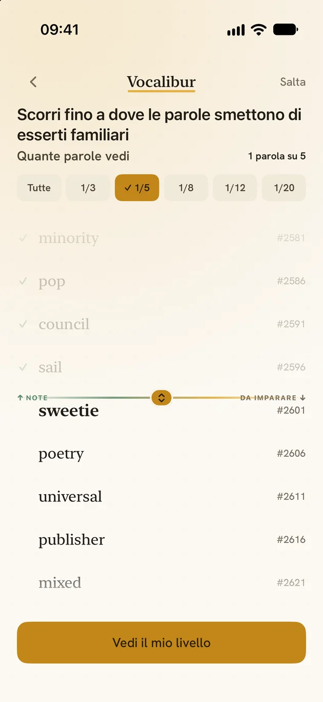

Quali parole imparare?
Parti da ciò che conosci già.
Scorri l’elenco delle parole, dalla più comune alla più rara, e scegli il tuo punto di partenza. Vocalibur propone poi le parole nuove in ordine di frequenza: 30.000 carte, riferimenti per livello e 55 temi.